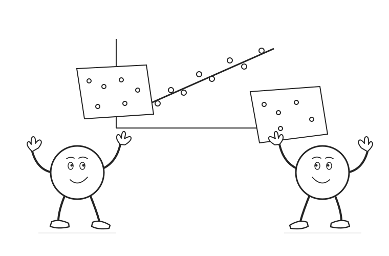

02 / Causal machine learning
Partially linear DML
Learn what is predictable. Relate what remains.
Use flexible predictions to remove covariate patterns while preserving a low-dimensional causal parameter.
Scroll to begin
Begin with nonlinear covariate patterns. Remove what the covariates predict, then examine orthogonality, cross-fitting, and the meaning of the coefficient.
Flexible predictions.
A precise target.
Partially linear DML combines out-of-fold predictions, residualization, and an orthogonal score. The constant coefficient belongs to a model and an identifying argument. When effects vary, check which weighted average the residual slope actually represents.
Read the complete explanation, calculations, and assumptions ↗
Sources and further reading
- Chernozhukov et al. (2018). Double/debiased machine learning for treatment and structural parameters.
- DoubleML. Orthogonal score definitions.
The constructed example uses information-exposure intensity D, a continuous treatment, and a political-knowledge score Y. X is a centered engagement index. Fifty points exhaust a balanced grid of engagement, treatment disturbances, and outcome disturbances. The first calculations use known population nuisance functions to isolate the geometry.